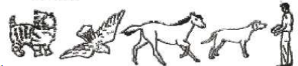
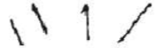
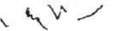

Beri kubus di depannya. Dapatkah anak meletakkan 4 buah kubus
satu persatu di atas kubus yang lain tanpa menjatuhkan kubus
itu?
Apakah anak dapat menyebut 2 diantara gambar- gambar ini
tanpa bantuan? (Menyebut dengan suara binatang tidak
dihitung)

Bila diberi pensil, apakah anak mencoret-coret kertas tanpa
bantuan/petuniuk?
Buat garis lurus ke bawah sepanjang sekurang- kurangnya 2.5
cm.
Suruh anak menggambar garis lain di samping garis ini.
Jawab Ya bila ia menggambar garis seperti ini :

Jawab Tidak bila ia menggambar garis seperti ini :

Dapatkah anak menggunakan 2 kata berangkai [ada saat berbicara
sepert "minta minum", "mau tidur"?
("Terima kasih" dan "Dadag" tidak ikut dinilai)
Dapatkah anak mengenakan sepatunya sendiri?
Dapatkah anak menyauh sepeda roda tiga sejauh sedikitnya 3
meter?
Ikuti perintah ini dengan seksama. Jangan memberi isyarat dengan
telunjuk atau mata pada saat memberikan perintah berikut ini:
"Letakkan kertas ini di lantai".
"Letakkan kertas ini di kursi".
"Berikan kertas ini kepada ibu".
Dapatkah anak melaksanakan ketiga perintah tadi?Letakkan
selembar kertas seukuran buku ini di lantai. Apakah anak dapat
melompati bagian lebar kertas dengan mengangkat kakinya secara
bersamaan tanpa didahului lari?
Beri bola tenis. Minta anak melemparkan kearah dada anda.
Dapatkah anak melempar bola lurus ke arah perut atau dada anda
dari jarak 1,5 meter?
Tes Daya Dengar
Kemampuan Ekspresif
Apakah anak dapat menyebutkan nama benda dan kegunaannya?
Cangkir untuk minum, bola untuk dilempar, pensil warna untuk
menggambar, sendok untuk makan?
Apakah lebih dari tiga perempat orang mengerti apa yang
dibicarakan anak anda?
Kemampuan Reseptif
Apakah anak dapat menunjukkan minimal 2 nama benda di depannya,
sesuai fungsinya (misal untuk minum: cangkir; untuk dilempar:
bola; untuk makan: sendok; untuk menggambar: pensil warna)?
Apakah anak dapat mengerjakan perintah yang disertai kata depan?
(misal: sekarang kubus itu di bawah meja, tolong taruh di atas
meja)?
Kemampuan Visual
Apakah anak secara spontan memulai permainan dengan gerakan
tubuh? Seperti pok ame-ame atau cilukba?
Apakah anak anda menunjuk dengan jari telunjuk bila ingin
sesuatu, bukan dengan cara memegang dengan semua jari?
Tes Daya Lihat
Mata Kanan
Mata Kiri
MENTAL EMOSIONAL
Kuesioner Masalah Perilaku Emosional
Apakah anda sering bereaksi negatif, marah, atau tegang tanpa
sebab yang jelas?
(bereaksi negatif contohnya rewel, tidak sabran, banyak
menangis, mudah tersinggung atau bereaksi berlebiha bila merasa
situasi tidak seperti yang siharapkannya atau kemauannya tidak
terpenuhi)
Apakah anak anda tampak lebih memilih untuk menyendiri atau
bermain sendiri, atau menghindar dari anak seumurnya atau orang
dewasa?
(ingin sendirian, menyendiri dengan ekspresi murung, tidak
bersemangat, sedih, atau kehilangan minat terhadap hal-hal yang
biasa dinikmati)
Apakah anak anda cenderung bersikap menentang?
(membantah, melawan, tidak mau menurut atau melakukan hal yang
sebaiknya dari apa yang diminta, serta tampak tidak peduli
ketika diberitahu atau ditegur)
Apakah anak anda mudah takut atau cemas berlebihan tanpa sebab
yang jelas ?
(misal takut pada binatang auatu benda yang tidak berbahaya,
terlihat cemas ketika tidak melihat ibu/pengasuhnya)